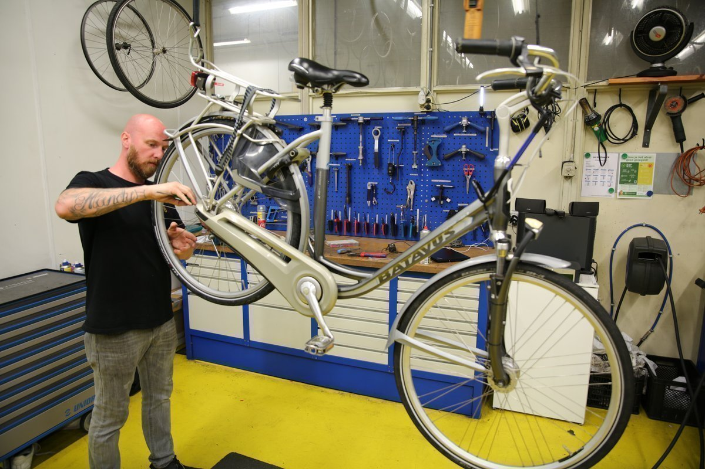
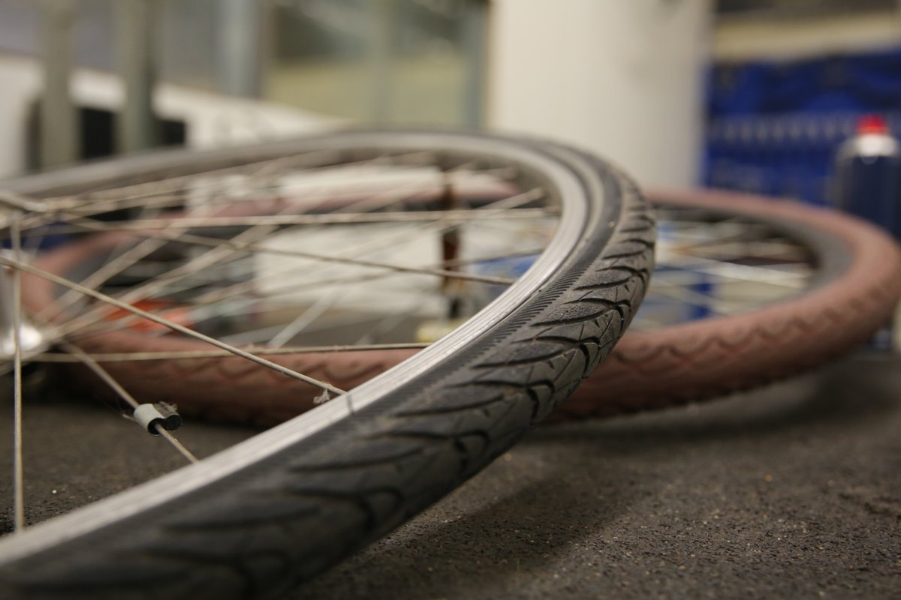
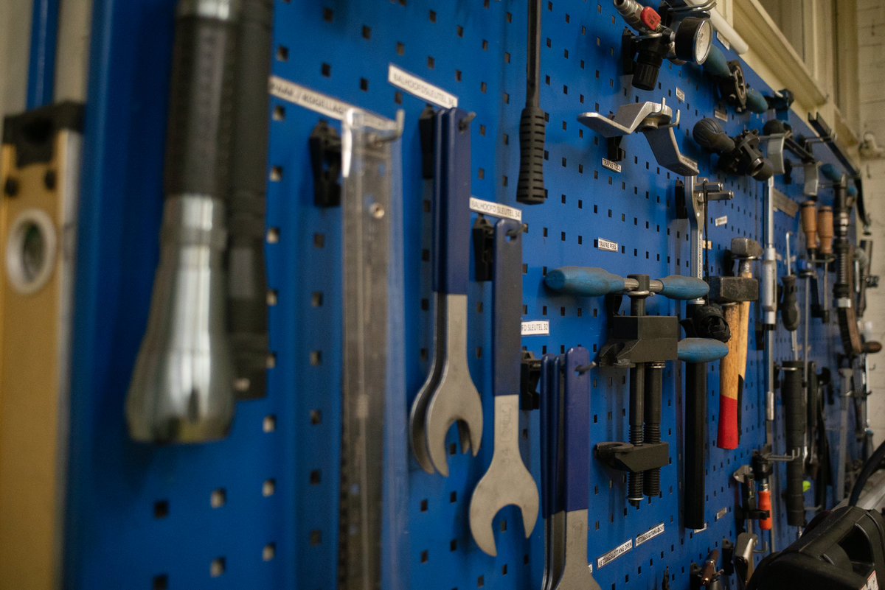
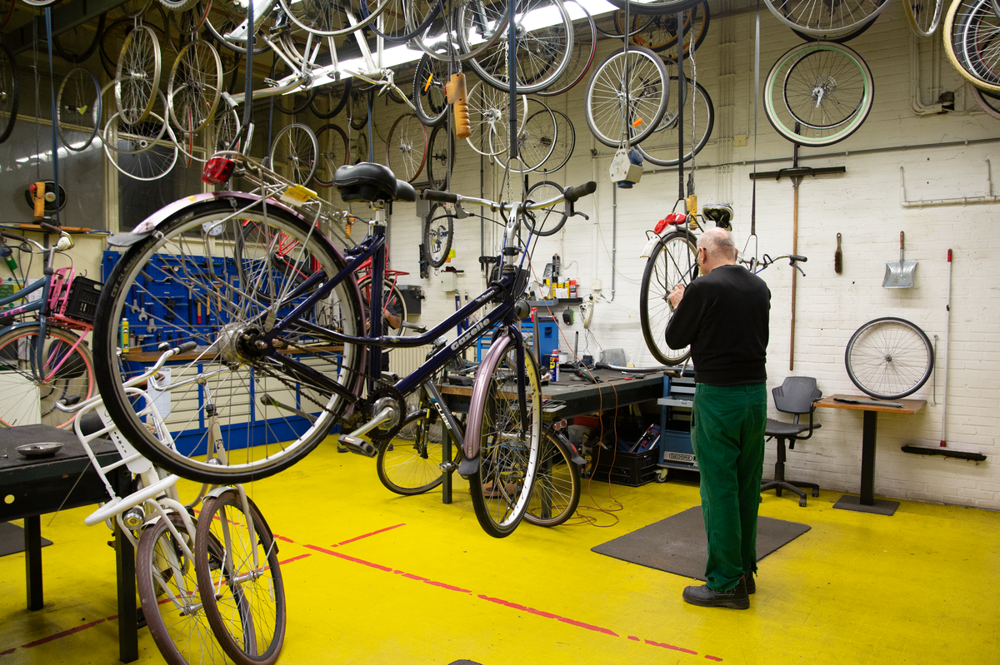

Is je fiets toe aan een reparatie of ben je op zoek naar een betaalbare tweedehands fiets in Weert? Bij de fietsenwerkplaats van Kr8tig aan de Parallelweg 168 helpen we je graag weer op weg. Van een lekke band of versleten ketting tot een fiets die een grondige opknapbeurt nodig heeft.
In onze fietsenwerkplaats werken deelnemers samen met ervaren vakmensen aan echte fietsen van echte klanten. Ze voeren verschillende onderhouds- en reparatiewerkzaamheden uit en leren zo het vak stap voor stap in de praktijk.
Voor jou betekent dat dat er met aandacht aan je fiets wordt gewerkt. Voor onze deelnemers biedt iedere reparatie een kans om technische vaardigheden te ontwikkelen, problemen op te lossen, samen te werken en verantwoordelijkheid te nemen. Het resultaat is direct zichtbaar: een fiets die weer veilig de weg op kan én een deelnemer die nieuwe ervaring heeft opgedaan.
Naast reparaties werken we samen met verschillende gemeenten. Zwerf- en weesfietsen krijgen bij Kr8tig waar mogelijk een nieuwe bestemming. De fietsen worden gecontroleerd, gesorteerd en opgeknapt. Exemplaren die niet meer te herstellen zijn, worden gedemonteerd zodat bruikbare onderdelen opnieuw kunnen worden ingezet.
Zo voorkomen we dat bruikbare materialen onnodig worden weggegooid. Onderdelen worden bijvoorbeeld gebruikt voor andere reparaties of krijgen een verrassende nieuwe bestemming binnen onze creatieve en technische afdelingen.
Circulariteit krijgt zo heel praktisch vorm: herstellen wat nog goed is, hergebruiken wat nog bruikbaar is en opnieuw waarde creëren.
Op zoek naar een betaalbare tweedehands fiets? Bij Kr8tig vind je een wisselend aanbod opgeknapte fietsen. Voordat een fiets opnieuw wordt aangeboden, wordt deze van voor tot achter gecontroleerd en waar nodig voorzien van nieuwe of hergebruikte onderdelen.
Het aanbod wisselt regelmatig, dus loop gerust binnen om te bekijken wat er op dat moment beschikbaar is.
Heb je zelf een fiets staan die je niet meer gebruikt? Ook fietsen die reparatie nodig hebben zijn welkom als donatie. Zo geef je jouw oude fiets de kans op een tweede leven.
Is je fiets defect en lukt het niet om deze zelf naar onze werkplaats te brengen? In de regio Weert bieden we ook een haal- en brengservice. Neem contact met ons op om de mogelijkheden te bespreken.
Heeft je fiets onderhoud of een reparatie nodig, wil je een tweedehands fiets bekijken of heb je een fiets die je wilt doneren? Kom dan langs bij Kr8tig aan de Parallelweg 168 in Weert.
Voor vragen of informatie kun je contact opnemen via j.neven@kr8tig.nl. We zijn geopend van dinsdag t/m vrijdag van 09.00 tot 16.00 uur.
Neem contact op